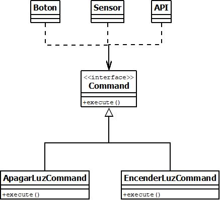

El patron de diseño command consiste en abstraer una serie de funciones (comandos) mediante una interfaz, de manera que puedan ser llamados mediante varios tipos de objetos.
Un ejemplo es el siguiente:
En este ejemplo tenemos varios tipos de actuadores (boton, sensor y api), que utilizarán la interfaz "command", y a su vez tenemos dos tipos de objetos que implementan la interfaz "command", si por ejemplo queremos ejecutar la accion de "ApagarLuz" podríamos hacerlo desde cualquiera de los actuadores, pasándole un objeto ApagarLuzCommand, y llamando a su función execute.
Con este patrón estamos elevando las funciones a nivel de clase, y al utilizar la interfaz command nos permite separar el objeto que llama a la función de la ejecución en sí, los objetos que llaman a los comandos (boton, sensor y api) no saben nada de los comandos en sí.
De esta manera podemos añadir mas actuadores de manera aislada sin que afecte a los comandos, y podemos añadir mas comandos sin que afecte a los actuadores.
Design Patterns | Command